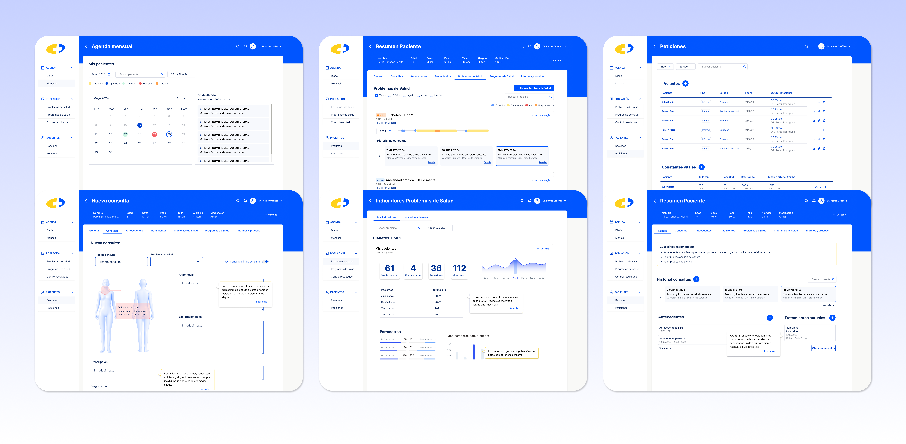

Hola, soy Victoria Chesa, diseñadora digital. Apasionada por crear experiencias intuitivas y visuales que conecten con las personas.

DISEÑO VISUAL E INTERACCIÓN
2024/25
Rediseño de la Sede electrónica de la Seguridad Social ESpañola
Creating a Natural Hair app that helps users document, manage, track, and celebrate their natural hair journey.
View Case Study →
FUNCIONALIDAD Y DISEÑO VISUAL
2024/25
Empowering Natural Hair Journeys with a Personalised Diary App
Creating a Natural Hair app that helps users document, manage, track, and celebrate their natural hair journey.
View Case Study →

UX/UI
2025
Diseño Médico
Project description goes here...

UX/UI
2025
Mi SCS sanidad canarias
Project description goes here...